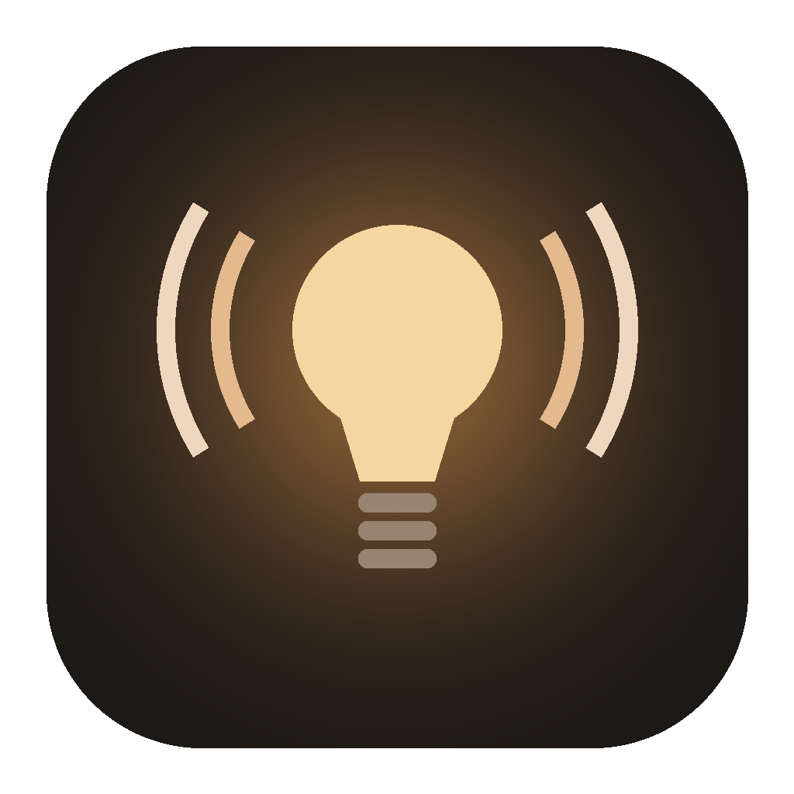

TuyaGlow GitHubTuyaGlow is a free Mac app for Tuya and Smart Life Wi-Fi bulbs. The bulb pulses on the beat, follows your screen, or works as a normal light. It runs on your Wi-Fi only. No cloud.
Pulses on every beat, new color each bar. Fades in breakdowns, builds up, strobes on the drop.
The bulb takes the main color of your screen, like Ambilight. Picks the display you are using.
Five white shades from Candle to Cool, color swatches, a color picker and brightness.
Talks to the bulb on your Wi-Fi with Tuya's local protocol 3.3, 3.4 and 3.5. Fast and private.
Many smart bulbs are Tuya bulbs under another brand. If your Wi-Fi bulb pairs with Smart Life or Tuya Smart, it should work.
| Bulb | Status | App |
|---|---|---|
| Wipro Smart RGBCW 9W | Tested, protocol 3.5 | Wipro Next / Smart Life |
| Syska Smart LED | Pairs with Smart Life. Not tested yet | Smart Life |
| Other Smart Life / Tuya Smart bulbs | Should work | Smart Life / Tuya Smart |
Tested another bulb? Tell us so others know.
python3 -m venv .venv && .venv/bin/pip install tuya-device-sharing-sdk "qrcode[pil]" cryptography .venv/bin/python scripts/get-local-key.py
Yes. TuyaGlow makes Tuya and Smart Life bulbs pulse to whatever plays on your Mac: Spotify, YouTube, Apple Music or games.
Yes. The Wipro Smart RGBCW 9W is tested. Wipro smart bulbs are built on Tuya.
No. The key script uses the Smart Life app's QR sign-in, once.
Only the one-time key script. The app itself only talks to your bulb on your Wi-Fi.
Streaming apps block their video while any screen capture runs. This is copy protection. Use Music or Light mode while you watch.
No, TuyaGlow is for macOS. On Windows, try OpenTuyaSync or LumiSync.